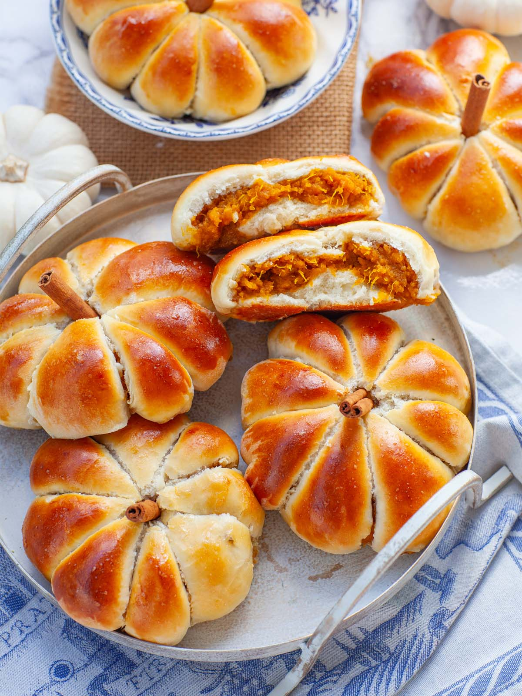
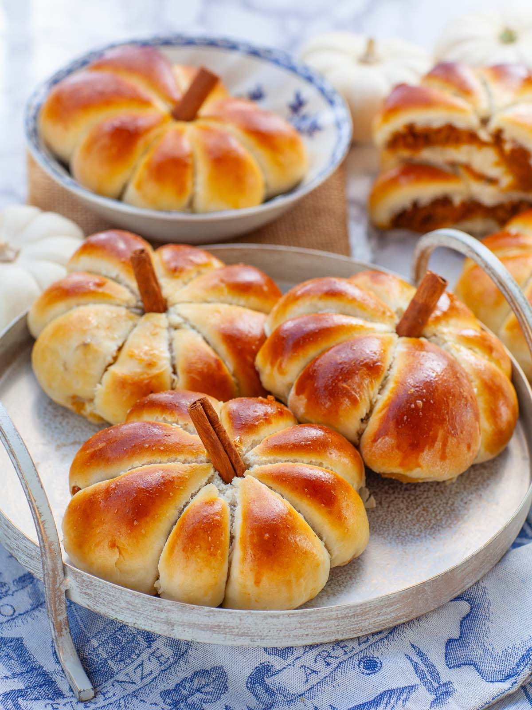
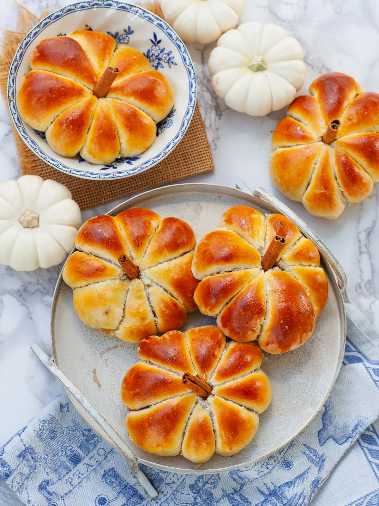

Homemade Pumpkin Pie
Baked Sweet Pumpkin

A taste from my childhood! Soft and fluffy baked sweet pumpkin piroshki, shaped into cute little
pumpkins!
These pumpkin hand pies are made with a soft and buttery sweet yeast dough, filled with a pumpkin,
cinnamon,
and brown sugar filling. I love these incredible sweet piroshki for fall! My mom would make them for us
with
freshly baked pumpkin and I still remember the aroma of these baking in the oven!
Ingredients for Sweet Pumpkin
Here are the main ingredients you’ll need to make these delicious pumpkin piroshki. Find the full list of
ingredients in the printable recipe card below.
- Sweet Pie Pumpkin – other firm varieties of pumpkin will also work well; however, I prefer this
one
since it has very little moisture. This is the type of pumpkin used to make store-bought pumpkin puree.
- Whole Milk, Butter, Eggs – for making the soft yeast dough. I recommend having the eggs at room
temperature.
- Brown Sugar – for making the filling. Regular white sugar will also work well.
- Ground Cinnamon & Nutmeg – I love the flavor these warming spices add to the recipe!
- Cinnamon Sticks – for the pumpkin stems (only if you’re shaping the piroshki into pumpkins).
Roasting the Sweet pie Pumpkin for Filling
You can use store-bought pumpkin puree for the piroshki filling; however, I prefer to use freshly baked
pumpkin. It has more aroma and flavor! Here’s how to make it:
- Preheat the oven to 425°F. Wash the sweet pumpkin first, then use a sharp knife and carefully split it
in half. Use a large spoon to scoop out the seeds.
- Split each pumpkin half into smaller wedges and place onto a baking sheet lined with parchment paper.
Cover the baking sheet tightly with foil to seal in the moisture.
- Bake the pumpkin covered for about 40 minutes, or until it’s soft and fork tender. Remove the pumpkin
from the oven and allow it to cool before handling.
How to Meke Brows Sugar Pumpkin Filling
- Once the pumpkin has cooled down enough to handle, use a large spoon to scoop the soft pumpkin flesh
away
from the rind and drop it into a large mixing bowl.
- Add in the brown sugar, cinnamon, and a touch of nutmeg. You can use a hand mixer or a food processor to
puree the pumpkin into a smooth mixture.

Making Sweet Piroshki Dough
While the pumpkin is baking, you can get started on the soft and buttery yeast dough.
- Heat the milk to 120°F to 130°F using the microwave or on the stovetop. Pour the warm milk into a large
mixing bowl and sprinkle in the yeast. Allow the yeast to stand and proof for about 5 minutes, until
it’s foamy.
- Add in the eggs, sugar, vanilla, salt, and melted butter (cooled). Whisk everything together for a few
minutes until well combined.
- Gradually begin adding in the flour, about ½ cup at a time, whisking well after each addition. Once the
batter thickens, switch to a spatula and continue mixing in the flour.
- Flour your work surface with flour, then turn out the formed dough. Knead the dough for 6 to 8 minutes,
adding more flour as needed, until the dough is soft, smooth and elastic.
- Place the dough back into the mixing bowl, cover it with a towel, and set into a warm corner of the
kitchen to proof until doubled in size, about 1 to 1 ½ hours.
How to Make Pumpkin Piroshki
Once the dough has proofed and you have the pumpkin filling ready to go, it’s time to make some
piroshki!
- Gently punch down the proofed dough and turn out onto a well-floured work surface. Divide the dough into
12 equal pieces: or 16 pieces for smaller piroshki.
- Press each piece of dough into a circle about 6 inches across. Add approximately 1/3 to ½ cup of pumpkin
puree into the center, avoiding the edges.
- Bring the dough up and around the filling, pinching at the top and down the sides, sealing the filling
inside. Bring the dough together at the top, forming round piroshki.
- Place the piroshki seam side down onto baking sheets lined with parchment paper, spacing them a few
inches apart. Brush the tops of the piroshki with egg wash.

Shaping the Piroshki into Pumpkins
These sweet pumpkin piroshki can be made as simple round piroshki, or you can use kitchen twine to shape
them
into cute little pumpkins.
- To make pumpkin shaped piroshki, cut 18-inch pieces of twine for each one. Make sure the twine is
loosely tied around the piroshki!
- Center the twine over the top of the piroshki, then wrap around the back, twist, and then bring forward
again, creating a cross, or 4 sections. Repeat this process again, creating 8 sections, then tie at the
top and cut off the excess twine. Apply the egg wash after tying the twine!
Baking Instructions for Sweet Piroshki
- Allow the shaped piroshki to proof for about 45 minutes, until the dough is fluffy. Meanwhile, preheat
the
oven to 350°F. I like to keep the piroshki next to the stove where it’s nice and warm so that they proof
faster.
- Bake the pumpkin piroshki at 350°F for 22 to 23 minutes, until they’re rich golden-brown on the outside.
Use
a spatula to lift them off the baking sheets and onto a wire rack to cool.
- While the piroshki are still warm, remove the kitchen twine. Use a small pair of kitchen scissors to cut
the
twine at the top first, then gently pull the twine down the sides. Turn the piroshki over and gently
pull
the twine around and off.
To see more information and photos ,clich here